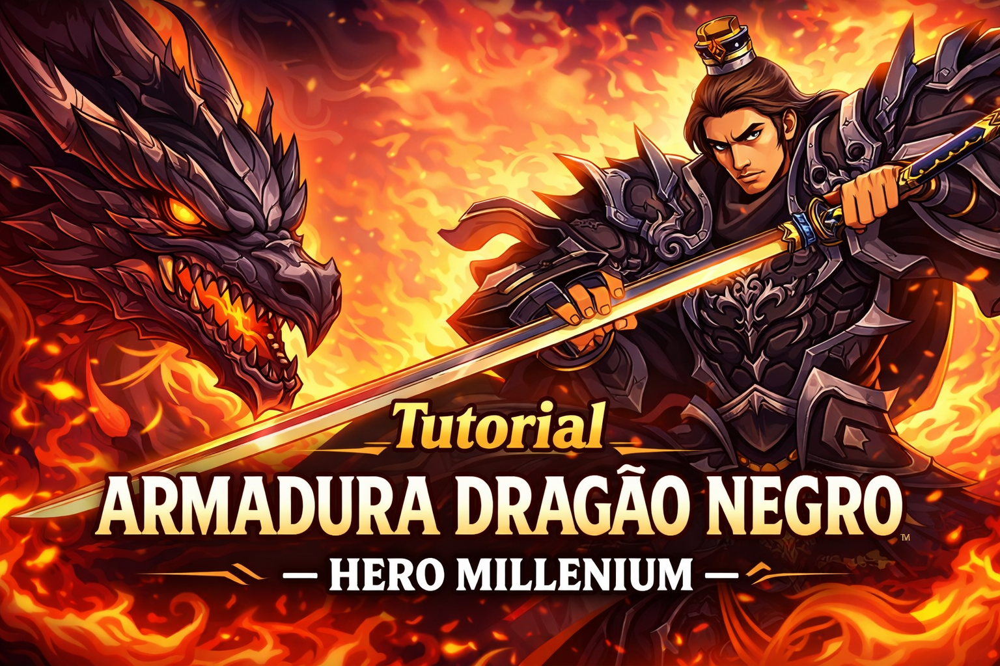
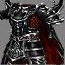
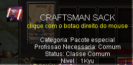
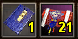

Passo a Passo
Introdução

Para obter um item Único, você precisa fazer e usar uma Armadura Espiritual Eterna primeiro.
Armadura Dragão Negro — BD

※ A Armadura do Dragão Negro é feita através de alguns materiais e pode ser dropada de monstros épicos.
Materiais Necessários

※ Como obter Craftsman Sack? Para obter esses itens basta matar monstros em mapas específicos. O mapa "Templo Abandonado" dropa este material. Outra forma de obter os materiais é desmanchando itens. Os Livros para fabricar as armaduras são dropados de boss ou de monstros específicos.
